Target
Children’s Apparel
Product Development Guide
Issued: May 2, 2014
Revised: January 4, 2024
Introduction#
The Target Children’s Apparel Product Development Guide is for styling/design details only and does not include safety or regulatory standards mandated by Federal, Provincial, or State laws. Target products must comply with all legal requirements and Children’s Supplemental Protocols, available from third party testing laboratories. The testing protocols include safety and regulatory standards. The guidelines in this manual are advised under normal/general wearing conditions. Items used on children’s apparel must not present any danger or hazard to children during normal use, or as a result of reasonably foreseeable damage or abuse.
Important: Target may furnish, specify or adopt product specifications, performance standards, drawings, product claims, instructions, descriptions and/or information related to the goods you sell to Target (the “Specifications”). Regardless of the Specifications, VENDOR IS RESPONSIBLE for: (1) product and packaging safety; (2) compliance with all applicable laws, rules, regulations, standards, codes, orders, directives, judicial and administrative decisions, and ordinances, of the country of origin, the country of transit, the United States and Canada, any state, province, or other subdivision thereof, and any agency or entity of the foregoing, including all laws relating to packaging and labeling (the “Laws”); (3) accuracy and substantiation of all product and packaging claims; (4) evaluation the necessity for, and creation of, product warnings; (5) providing products and packaging to Target that do not infringe the proprietary rights of any third party; and (6) compliance with all teams set forth on Target’s Partners Online system and/or any other system used by Target. In addition, each vendor’s products and packaging must comply with any specifications furnished, specified or adopted by Target. If a vendor believes there to be a conflict between Target’s specifications and product safety, Laws, or the intellectual property rights of others, the vendor must contact Target promptly to discuss Target’s specifications and ensure product safety and compliance with Laws. Vendors are NOT relieved from any obligations or liability for any reason or because of any action by Target or any third party including, but not limited to, any of the following: (a) the vendor has received a satisfactory lab result, (b) Target has conducted testing, (c) Target has accepted or approved the vendor’s product, designs, claims, materials or packaging, (d) target has reviewed claim substantiation, and/or (e) Target has authorized an override of testing protocol or testing results. Target reserves the right to amend its testing protocols and packaging production guides at any time. No subsequent or prior communication between
Target and a vendor may operate to modify the obligations set forth by this paragraph, unless specifically agreed to in a writing signed by a Target Vice President or Senior Vice President.
How to Use this Guide#
In the apparel section of this guide the size of the garment is referred to, not the child’s age when specifying requirements. The chart below correlates the child’s approximate age with the size.
Size Age | |
Preemie – 9M | Under 1 year |
12M ‐5T | 1 year to 5 years |
Girl 4‐6X / Boy 4‐7 | 3 years to 7 years |
Girl 7‐16 / Boy 8‐18 | 7 years and up |
Links & Contacts#
- AAChildrenProdDevGuide@Target.com Mailbox for A&A Children Product Development Guide
- QAA&A@Target.com Mailbox for PSQA Apparel & Accessories Team
- Fabric.Standards@target.com A&A Product Standards Team
- www.CPSC.gov For information on US Federal regulations including CPSIA
- www.ecfr.gov For Codes of Federal Regulations. Consumer products generally regulated by 16 CFR.
- https://www.partnersonline.com/page/library/Working with Target/Team Partners/Product Safety and Quality Assurance Team/GLC Contact/9809 Third Party Lab contacts
Terminology#
Belt: a strip of flexible material worn especially around the waist as an accessory; not necessary for function of garment. A belt is exposed and removable from the garment.
Bungee: an elasticized cord or rope. A bungee is encased in a garment, most commonly at the waistband, sweep, or cuffs of a garment.
Cord: a long slender flexible material usually consisting of several strands (as of thread or yarn) woven or twisted together. Cords include but are not limited to; drawstrings, belts, ties, sashes, and bungee cords.
Drawstring: a non‐retractable cord, ribbon, or tape of any material inserted into a waistband, hem or casing to provide closure, control the size or fullness of an opening, or part of the garment. A drawstring is encased in the garment.
Entrapment Hazard: any items/condition which impedes withdrawal of a body part or an object attached to the body that has penetrated an opening
Functional: alters the shape or size of the garment; affects the wearability of the garment.
Monofilament: synthetic thread or yarn composed of a single strand rather than twisted fibers.
Non‐functional: secured permanently to the garment so it does not allow the size or shape of the garment to be altered. Has no functional attributes, provides a decorative element only.
Sash: a textile band worn about the waist as part of one’s clothing, has no metal parts, prongs, or holes.
A sash is exposed and removable from garment.
Sharp Point: trim component having a thin cutting edge or fine point that is sharp to the touch, or that activates a sharp points or edge tester.
Small Part: trim component able to fit completely into Small Part Testing Cylinder.
Small Part Testing Cylinder: 2.25” long by 1.25” wide cylinder that mimics the approximate size of the fully expanded throat of a child.
Strangulation Hazard: an item around the neck or that head could fit into that could possibly become tightened or caught resulting in strangulation.
Tie: a cord, ribbon, or tape of any material used for fastening, uniting, or closing an opening. A tie is exposed and permanently attached to the garment.
Upper Outerwear: Clothing such as jackets and sweatshirts, generally intended to be worn on the exterior of other garments. Excludes underwear and inner layers, but includes lightweight outerwear that is appropriate for warmer climates. Pants, shorts, and skirts are not intended for the upper portion of the body and are not included. (taken from CPSC Website)
Section 1: Children’s Care Labels #
For Sizes 0-16 children’s product (except outerwear): All Care Labels require having “Wash before wear” instruction.
Section 2: Apparel Trims/Hardware#
Zippers#
Invisible/Concealed Zippers#
Not allowed for children’s apparel sizes Preemie‐5T.
For functional garment zipper must be placed at center back where it is not easily accessed by wearer for children’s apparel sizes 4‐18.
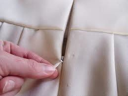
Invisible/ Concealed Zipper Example
Acceptable to use invisible zippers on active wear pockets size 4‐18
Metal Zippers:#
For styles with direct contact with the skin, a facing or binding is required to conceal back of the zipper for children’s apparel sizes Preemie – 5T
Mock Neck/Outerwear Styles, require full facing, binding or chin guard or must be sandwiched between 2 ply collar for children’s apparel sizes Preemie – 5T
Non‐outerwear or layering garments not intended to be worn next to skin (hoodie or sweatshirt) do not require facing or binding unless determined by TD for children’s apparel sizes Preemie – 18.
Plastic Zipper:#
For styles with direct contact with the skin, a facing or binding is required to conceal back of the zipper for children’s apparel sizes Preemie – 9M
Mock Neck/Outerwear Styles:#
Require full facing, binding or chin guard or must be sandwiched between 2‐ ply collar for children’s apparel sizes Preemie – 18.
Swim Rashguards, Swim Suit Neckline (1 or 2 piece):
Require fabric facing or gusset to keep zipper from pinching child’s skin for children’s apparel sizes Preemie – 18.
Non‐outerwear or layering garments not intended to be worn next to skin (hoodie or sweatshirt) do not require facing or binding unless determined by TD for children’s apparel sizes Preemie – 18.
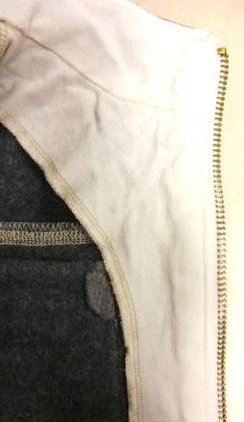
Zipper Facing & Zipper Binding Example
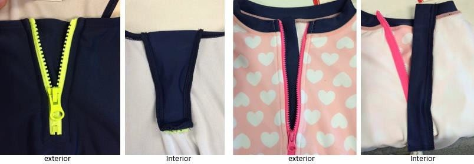
Swim example of gusset (left) and facing (right)
Zipper Stops#
Sizes Preemie – 5T
Minimum of two solid stops are required; except for woven bottom with sewn on waistband one solid stop is required on the same side as the slider.
Sizes 4 – 18
Minimum of one solid stop is required on the same side as the slider.
Zipper Stop Example
Zipper Pulls#
Textile/Leather Pull
Must be bar tacked so loop cannot exceed 0.75” for children’s apparel sizes Preemie – 5T.
Must not extend past hem of pant leg or sleeve opening for children’s apparel sizes
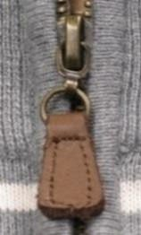 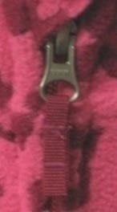 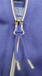
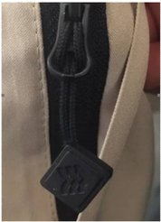
Preemie – 18Leather & Twill (Textile) Pull Examples
Cord pull cannot be stretch and must be no longer than 2” in length once attached.
See furthest right image for All in Motion puller details
Metal or Novelty Pull#
If pull has a hole, the hole must be at least 6mm across at widest point and 4mm across at longest point for children’s tops and sleepwear sizes Preemie – 5T.
Hole must be elliptical in shape for children’s tops sizes Preemie ‐ 5T
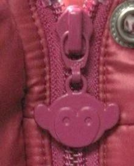
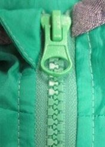
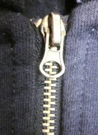
Metal and Novelty Zipper Pull Examples
Total pull length must not exceed 0.625” at pant leg or long sleeve opening for children’s apparel sizes Preemie – 18.
Must not extend past hem of pant leg or sleeve opening for children’s apparel sizes Preemie – 18.
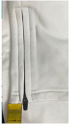
Zipper at Leg or Sleeve Opening
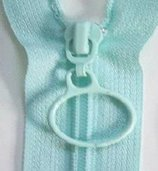
Ring Not allowed for children’s apparel sizes Preemie – 18.Ring Zipper Pull Example
Silicone/Rubber/PVC
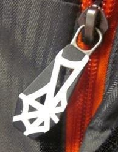
Not allowed for children’s apparel sizes Preemie – 5T.Silicone, Rubber, PVC Zipper Pull Examples
Grommets and Eyelets#
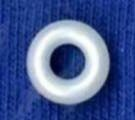
Plastic is not allowed for children’s apparel sizes Preemie – 18.Plastic Grommet Example
Snaps#
Must not be applied on seams or stitches for children’s apparel sizes Preemie – 18.
Must be attached on even layers of fabric and must go through a minimum of 2 plys of fabric or be reinforced by a backing for children’s apparel sizes Preemie – 18.
Must be 14L + for children’s apparel sizes Preemie – 5T.
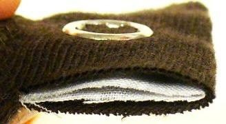
Snap set on even surface
D‐Rings, Hasps & Sliders#
D‐rings must be continuous for children’s apparel sizes Preemie – 18.
Hasps and Sliders must be welded closed with the exception of the Twist Loop Hardware from Mississippi Trading, Inc. for children’s apparel sizes Preemie – 18.
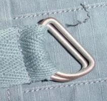
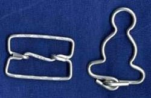
D – Ring; Hasp & Slider Examples
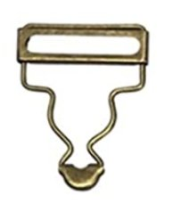
Toggles#
Toggle attachment must be reinforced with secondary material or sewn into seam for all children’s apparel sizes Preemie – 18.
Must be used on a layering piece only (sweaters, jackets, etc.) for children’s apparel sizes
Preemie – 5T.
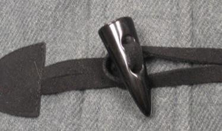
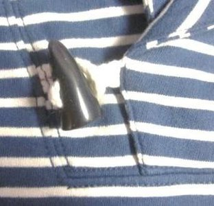
Figure 1: Toggle Attachment Examples
Buttons#
Two and Four Hole Buttons#
Must be 14L+ and attached by lockstitch for children’s apparel sizes Preemie – 5T.
Must be attached by lockstitch for children’s apparel sizes 4 –18.
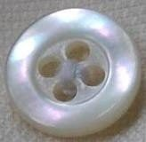
Two and Four Hole Button Examples
Claw Setting Buttons#
Not allowed for children’s apparel sizes Preemie‐5T.
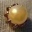
Claw Setting Button Example
Shank Buttons#
Not allowed for children’s apparel sizes Preemie‐5T.
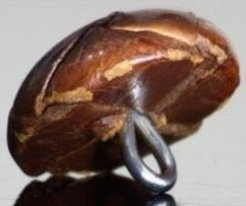
Shank Button Example
Tack Buttons w/ Aluminum Neck#
Not allowed for children’s apparel sizes Preemie‐18.
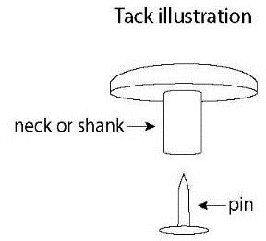
Tack Button with Aluminum Neck Example
Hook and Loop#
Must have rounded corners for children’s apparel sizes Preemie – 18.
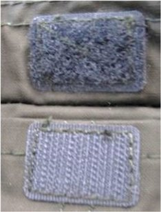
Thread#
Monofilament#
Hook and Loop Example
Not allowed in seams or areas that are in contact with skin for children’s apparel sizes Preemie –18.
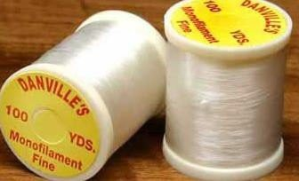
S – Hook#
Monofilament Example
Must be continuous on one side for Children’s apparel sizes Preemie – 18.
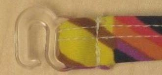
S‐ Hook Example
Decorative Embellishments#
Appliques & Embroidery#
Appliques containing felt must be attached so edges are not graspable for children’s apparel sizes Preemie‐5T.
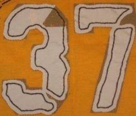
Non‐Graspable Applique Example
Maximum length of fringe on embroidered designs is 0.375” for children’s apparel sizes
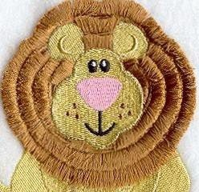
Preemie‐5T.Fringe on Embroidered Design Example
Knit interlining with fusible coating must be applied on back side of garment on children’s apparel sizes Preemie – 5T.
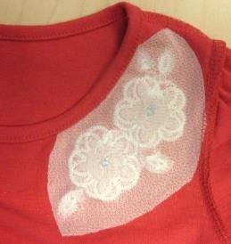
(Interior view) Knit Interlining with Fusible Coating Example
Sizes Preemie – 5T: Attachment strength for non‐functional trims including but not limited to beads, bugles, rhinestones, bow‐ties, pom‐poms, fringe:
*Refer to 3rd party lab for Development and MST testing requirements
Sizes 4 ‐ 18 Attachment Strength for non‐functional trims including but not limited to sequins, beads, rhinestones, bow‐ties, pom‐poms, fringe, etc.:
*Refer to 3rd party lab for Development and MST testing requirements
Fabric Embellishments: Felt is not allowed#
Must have fusible knit interlining applied to the inside of the garment, or inaccessible location on back side of the component if embellishment attachment poses skin irritation hazard for children’s apparel sizes Preemie – 18.
Swimwear must have lining applied to inside of garment if embellishment attachment poses skin irritation hazard for children’s apparel sizes Preemie – 18.
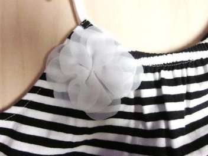
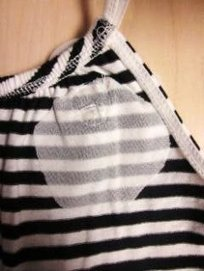
Fabric Embellishment & Fusible Interlining at Back Example
Note the following construction differences:
Flowers with Petals Sewn down at Center: In instances where the rosette or the flower are sewn down in the middle of the flower, the individual attachment strength test of each petal is not necessary.
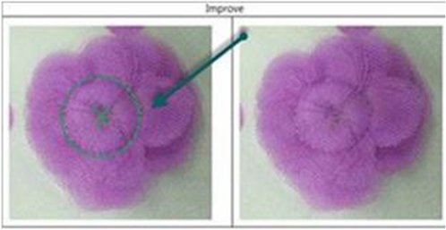
Flower with Petal Sewn Down at Center Example
Flowers with Petals NOT sewn down at the center: In instances where each petal on a fabric flower embellishment is considered an individual component and will be tested as such.
Fabric Rosettes#
Must not be made out of felt for children’s apparel sizes Preemie‐18.
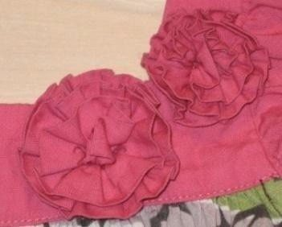
Fabric and Rosette Example
Beads & Jewels#
See Accessories Guide for all requirements.
Sequins Preemie‐5T#
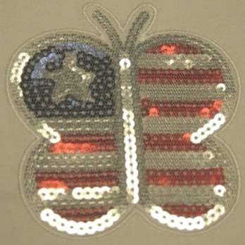
Covered Sequins Example
SIZES 12M ‐ 5T, not covered by mesh, non‐graspable sequins only:
If no mesh covering or similar material. MUST be Non‐Graspable Placed sequin artwork ONLY. No All over sequins allowed without mesh covering.
- Sequin size cannot exceed 3 mm
- Non‐graspable sequins tested with 10 HL. Sequins and stitching must not break.
- Sequins must be attached by lockstitch / minimum 4‐way stitch
- Must have over‐the‐back interlining (TA000000617023), consult with technical designer
- Consult 3rd party testing lab for detailed testing questions
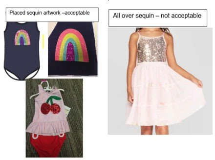
**NOTE: Each non‐graspable sequin artwork must be tested in development to ensure each design meets non‐ graspable requirements.- Additional Notes:
- Technical Designer should pull in the following verbiage into the Assembly & Construction section of the technical packet: “Sequins (NIT) Please reference Children Design Guide for Sequin Requirements.”
- Technical designer to request test report for any embellishments that are of concern and set up time with PSQA contact to review construction and test reports
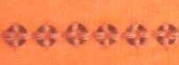
Refer to 3rd party lab for Development and MST testing requirements
4‐Way Stitch Sequins Example
Sizes 4‐18 (Big Kids)
- Must meet protocol requirements.
- Placed sequins must have over‐the‐back interlining, consult with technical designer.
Laminate or Heat‐Set Sequins#
Laminate or heat‐set sequins are not allowed on children’s apparel sizes Preemie – 5T.
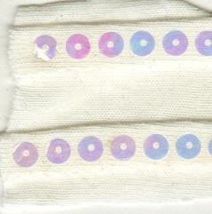
Laminate & Heat Set Sequins Example
Rhinestones#
Rhinestones are not allowed for children’s apparel sizes Preemie ‐5T.
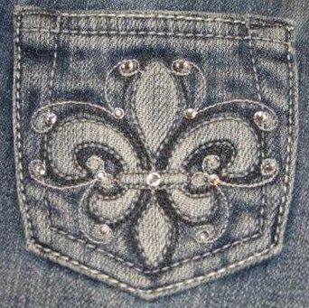
Rhinestones ExampleDecorative Studs#
Decorative Studs must be rivet attached for sizes Preemie ‐5T.
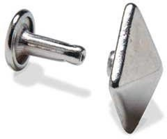
Decorative Studs Rivet Attached Example
Heat Set, Adhesive or Prong Attach Studs are not allowed for children’s apparel sizes
Preemie – 5T.
Bows#
Reference Loops section for loop and tail requirements.
Pom‐poms & Fringe (non‐swim)#
Pom‐ poms must not be attached to the ends of drawstrings, ties, or belts for children’s apparel sizes Preemie – 18.
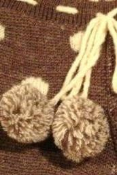
Not Acceptable Use of Pom
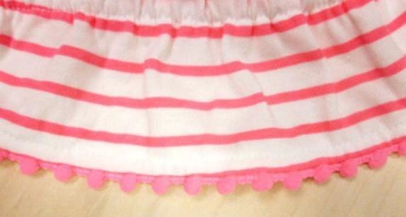
Acceptable Use of Pom Pom
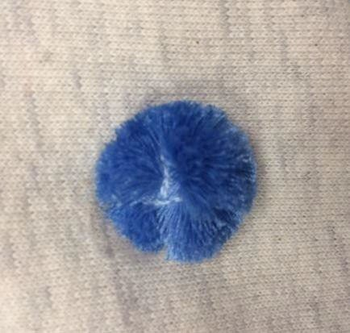
Acceptable Use of Pom Pom (follow all guidelines for embellishment attachment)
Fringe#
Not allowed on children’s swimwear for sizes Preemie – 5T.
Must not exceed 3” in length for children’s swimwear sizes 4 – 18. 2” maximum length for children’s apparel sizes Preemie – 5T.
5.5 ” maximum length for children’s apparel sizes 4 – 18.
For fringe restrictions on embroidered items reference Appliques and Embroidery Section.
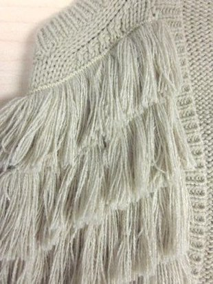
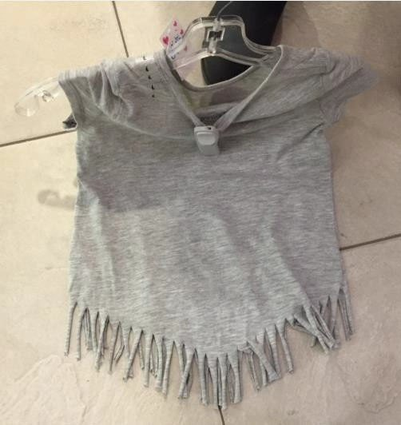
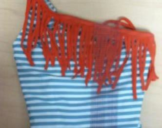
Fringe Examples
Natural Feathers#
Natural feathers are not allowed on children’s apparel sizes Preemie‐18.
Natural Feather Example
Tassels#
Around Neckline
Not allowed sizes Preemie to 9M Allowed sizes 12M‐ BG 18 (Big Girls)
Must pass applicable attachment strength test for size range Has interlining over the back where tassels are attached.
Tassels should not exceed 1” in length from top of tassle Should be attached minimum ¼” from neckline.
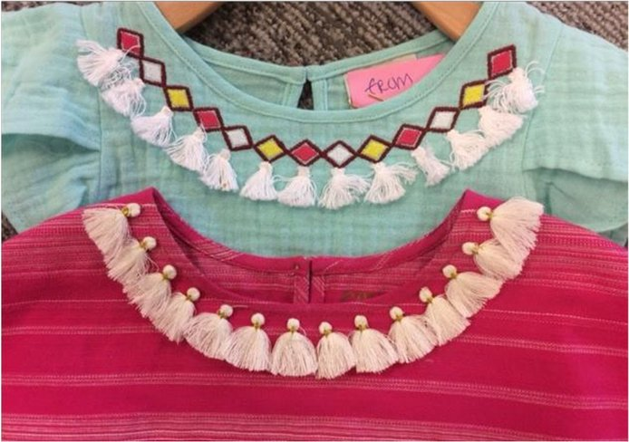
Example of Tassels at Neckline
At End of Drawstring
Allowed at the end of Non Functional Drawstrings only – size 12M – 18 Total length of the drawstring including tassel cannot exceed 3”.
Tassel must be attached to end of drawstring so finish is flat and should not create a large bulge which simulate a knot.
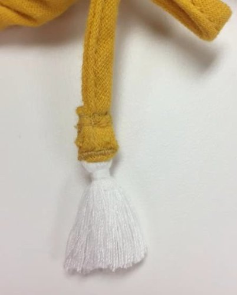
Section 3: Cords#
The regulations prohibit knots, toggles or other attachments at the free ends of drawstrings
‐ Tip (aglets) covering of rope’s ends can be a plastic or metal sheath or metal covering on the ends is used to prevent fraying, allowed for children’s apparel sizes 4 – 18 only.
‐Double turned and stitched end should not create a large bulge which simulates a knot for sizes Preemie – 18.
‐For Preemie to 5T, decorative wrapping on a cord/tie with double turned and stitched ends should not be so tight as to create a large bulge that simulates a knot. Decorative wrapping should be at least 1” from stitch line.
‐Decorative wrapping at end of cord with no double turn ok for Preemie‐18.
- Fringe or tassel on non‐functional tie or lacing at neck opening. The attached fringe length is included in the overall 3” length maximum and must meet the minimum strength requirement.
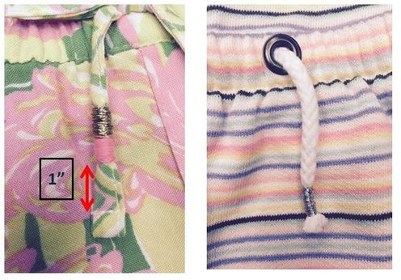
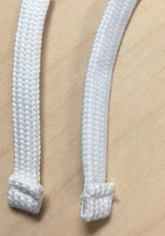
Examples of acceptable Drawstring Ends (no large bulge)Examples of unacceptable Drawstring Ends
Dipped Drawstring Ends#
Allowed at ends of Non-Functional Drawstring – size Preemie – 18 Allowed at ends of Functional Drawstring – size 9M‐18
Acceptable based on satisfactory test results.
Special Development Test request must be made to test the dipping for (Testing cannot be done in TOP):
- Chemicals
- Appearance after 30 home laundering
- Use and Abuse Testing
Functional Drawstrings/Lacing (Non‐Outerwear/Non‐ Layering Piece): | ||||
NIT (Preemie‐5T) | BBBG (4‐18) | |||
Head/Neck Area | Not Allowed | Not Allowed | ||
Head/Neck Area – Lacing | Not Allowed | Not Allowed | ||
Shoulder Area (Reference Sleeve Area image) | Not Allowed | Not Allowed | ||
Sleeve Area | Not Allowed | Not Allowed | ||
NIT (Preemie‐5T) | BBBG (4‐18) | |||
Waist/Hip Area CB Tack Example
Hip Correct Measurement (Left), Incorrect Measurement (Right) | Must be tacked at center back. Must not exceed 3” exposed when waist of garment is fully extended (stretched to be no wider than hip). | Must be tacked at center back. Must not exceed 3” exposed when waist of garment is fully extended (stretched to be no wider than hip). | ||
Functional Drawstrings/Lacing (Non‐Outerwear/Non‐ Layering Piece):# | ||
NIT (Preemie‐5T) | BBBG (4‐18) | |
Robe Tie | Attached at side seam, stitched down for a total of 2 inches from side seam. Length of tie from stitching should not exceed the following lengths on each side: Newborn: 6/9Mo tie from stitch point = 8" Toddler sizes: 2T/3T‐ 12”, 4T/5T‐13” | See Fully removable sash for details |
Interior continuous drawcord – ALL IN MOTION Only | Not Allowed | All In Motion Only Continuous interior drawcord. Eyelet distance 1.25” Must be tacked at CB. |
Leg/Ankle Area | Not Allowed | Not Allowed |
Toggles on Children’s waist# | ||
Preemie - 5T | BBBG 4-18 | |
Not Allowed | Toggles allowed at the waist and hip area of non-upper outerwear if it meets the following criteria:
Note: Toggles are only allowed at the waist and hip area of non-upper outerwear. They are not approved at the sweep of a skirt or jacket, or at the ankle/leg opening of a pant. The loop circumference must not exceed 3” when cinched to the body and must lay flat when relaxed. This detail must be verified during product development phase. | |
Non‐Functional Drawstring/Tie/Lacing (Non‐Outerwear/Non‐Layering Piece):# | ||||
NIT (Preemie‐5T) | BBBG (4‐18) | |||
Head/Neck Area – Faux Drawstring/Tie | Not Allowed | ‐Allowed, but must not exceed 3” in length − Allowed, but must not be a continuous tie in a casing | ||
NIT (Preemie‐5T) | BBBG (4‐18) | |||
Head/Neck Area – Faux Drawstring/Tie w/Bow | Not Allowed | ‐Allowed, but must not be a continuous tie in a casing, must be tied and tacked into non‐ functional bow ‐Loops must not exceed 3” in length when tied; bows must be pre‐ tied and tacked for children’s apparel sizes 4 – 18. ‐Tails must not exceed 3” in length when tied; ‐NO toggles or knots at ends. Tassles or fringe must meet protocol requirements | ||
Non‐Functional Drawstring/Tie/Lacing (Non‐Outerwear/Non‐Layering Piece):# | ||
NIT (Preemie‐5T) | BBBG (4‐18) | |
Not Allowed | ‐Non‐functional lacing must be tacked at top exit point on eac side and if there are tails, they must be tied and tacked into non‐functional bow. ‐Loops must not exceed 3” in length when tied; bows must be pre‐ tied and tacked for children’s apparel sizes 4 – 18.
| |
Shoulder Area | Must be tacked to garment. Tail must not exceed 3” from tack point. | Must be tacked to garment. Tail must not exceed 3” from tack point. |
Sleeve Area (above elbow) | Must be tacked to garment. Tail must not exceed 3” from tack point. | Must be tacked to garment. Tail must not exceed 3” from tack point. |
Sleeve Area (below elbow) (Reference Sleeve Area – Above Elbow image) | Not Allowed | Not Allowed |
Non‐Functional Drawstring/Tie/Lacing (Non‐Outerwear/Non‐Layering Piece): | ||
NIT (Preemie‐5T) | BBBG (4‐18) | |
Waist/Hip Area | Must be tacked to garment. Tail must not exceed 3” from tack point. | Must be tacked to garment. Tail must not exceed 3” from tack point. |
Waist/Hip Area (attached at side seam) Front or back tie Top or Bottom | Not Allowed | Each tie must not exceed the following lengths XS:18”, S:19”, M:20”, L:21.5”, XL:23” |
Leg Opening (capri length and above) | Must be tacked every 3” and at exit point, tie cannot Exceed 3” past exit point. | Must be tacked every 3” and at exit point, tie cannot exceed 3” past exit point. |
Leg Opening (full length pant) (Reference Leg Opening – Capri and above) | Not Allowed | Not Allowed |
Sashes (Non‐Outerwear/Non‐Layering Piece):# | ||
NIT (Preemie‐5T) | BBBG (4‐18) | |
Head/Neck Area | Not Allowed | Not Allowed |
Shoulder Area | Not Allowed | Not Allowed |
Sleeve Area (above elbow) | Not Allowed | Not Allowed |
Sleeve Area (below elbow) | Not Allowed | Not Allowed |
Waist/Hip Area | Sash not allowed. | Must be fully removable. |
Leg Opening | Not Allowed | Not Allowed |
Functional Drawstrings (Upper Outerwear/Layering Piece):# | ||
NIT (Preemie‐5T) | BBBG (4‐18) | |
Head/Neck Area | Not Allowed | Not Allowed |
NIT (Preemie‐5T) | BBBG (4‐18) | |
Shoulder Area (Reference Functional Drawstring Non‐ Outerwear/Non‐Layering Image) | Not Allowed | Not Allowed |
Functional Drawstrings (Upper Outerwear/Layering Piece):# | ||
NIT (Preemie‐5T) | BBBG (4‐18) | |
Sleeve Area (Reference Functional Drawstring Non‐ Outerwear/Non‐Layering Image) | Not Allowed | Not Allowed |
Waist/Hip | Not Allowed internally or externally | Functional Drawstrings [Drawstring, Ties, Cord, Ribbon, Tape] : are allowed at waist and hip area (not bottom opening) of the upper outerwear if it meets the following criteria:
continuous cord/string. |
Non‐Functional Drawstring/Tie (Upper Outerwear/Layering Piece):# | ||
NIT (Preemie‐5T) | BBBG (4‐18) | |
Head/Neck Area | Not allowed Newborn to 9M Allowed 12M – 5T Non‐functional faux drawcord allowed if it is: 3” in length or less end to end and must be tacked at both exit points, sewn down vertically entire length of exposed trim, or can be horizontally tacked every 0.5” to secure − CANNOT be a continuous casing with cord drawn through | Non‐functional faux drawcord allowed if it is: 3” in length or less end to end and must be tacked at both exit points, sewn down vertically entire length of exposed trim, or can be horizontally tacked every 0.5” to secure − CANNOT be a continuous casing with cord drawn through |
Shoulder Area (Reference Non‐Functional Drawstring Non‐ Outerwear/Non‐ Layering Image) | Not Allowed | Not Allowed |
NIT (Preemie‐5T) | BBBG (4‐18) | |
Sleeve Area (Reference Non‐Functional Drawstring Non‐ Outerwear/Non‐ Layering Image) | Not Allowed | Not Allowed |
Non‐Functional Drawstring/Tie (Upper Outerwear/Layering Piece):# | ||
NIT (Preemie‐5T) | BBBG (4‐18) | |
Waist/Hip Area (Reference Non‐Functional Drawstring Non‐Outerwear/Non‐ Layering Image) | Not Allowed | Not Allowed |
Sashes (Upper Outerwear/Layering Piece):# | ||
NIT (Preemie‐5T) | BBBG (4‐18) | |
Head/Neck Area (Reference Waist/Hip Area Image) | Not Allowed | Not Allowed |
Shoulder Area (Reference Waist/Hip Area Image) | Not Allowed | Not Allowed |
Sleeve Area (Reference Waist/Hip Area Image) | Not Allowed | Not Allowed |
Waist/Hip Area | Not Allowed | Must be fully removable |
Straps#
Halter Straps:
Sizes Preemie – 5T
Functional halter ties (free tied ends/tieable) not allowed on all apparel, including swim styles.
Faux halter styles allowed with fixed closure (no hook and loop tape or buttons) Clasp must pass additional testing‐ see development standards manual.
Halter neck straps for all apparel to be graded by Target TD and marked as critical POMs in the specification.
Straps must be permanently fixed, no adjustable or self adjusting strap styles No pullover elastic style halter straps allowed.
Acceptable Examples
Sizes 4‐18
Halter straps must not exceed a 3” length for loops and tails (9” untied length) when straps are tied securely around neck with no slack.
Halter straps that are not meant to be tied into a bow must not exceed a 3” tail length.
BG Halter Example
Not Acceptable Examples
Tie Shoulder Straps:#
Not allowed for children’s apparel sizes Preemie – 5T.
Functional tie shoulder straps must only be used when there is no other means to hold garment on body for children’s apparel sizes 4 ‐ 18.
Tie Shoulder Strap Example
Section 4: Loops#
Locker Loops#
Must be horizontal, tacked at two points for children’s apparel sizes Preemie ‐ 5T. Inside of garment ‐ Must not exceed 2.5” for Children’s apparel sizes Preemie ‐ 18. Outside of garment ‐ Must not exceed 1.5” for Children’s apparel sizes Preemie – 18.
Locker Loop Example
Hanger Loops#
Preemie – 5T.
Must be two separate loops, attached inside shoulder seams. Maximum length 3‐4” or 1.5” ‐2” when folded.
4 – 18
Must be two separate loops, attached inside shoulder seams or top edge for sleeveless Maximum length of 6” (3” when folded) for children’s apparel sizes
Non‐Functional Bow Loops#
Loops must not exceed 1.5” in length when tied; bows must be pre‐tied and tacked for children’s apparel sizes Preemie – 5T
Loops must not exceed 3.0” in length when tied; bows must be pre‐tied and tacked for children’s apparel sizes 4 – 18.
Tails must not exceed 3.0” in length when tied; bows must be pre‐tied and tacked for children’s apparel sizes Preemie – 18.
Pre‐Tied and Tacked Bow Examples
Hammer Loops#
Functional hammer loops not allowed for sizes Preemie – 5T.
Non‐functional hammer loops must be fully stitched down to garment for children’s apparel sizes Preemie – 5T.
Stitched Down Hammer Loop Example
Loop Labels#
Must be tacked every 1.5” if exceeds 2” finished/folded length (4” total unfolded length) requirement for children’s apparel sizes Preemie – 5T.
Loop Label Example
Epaulettes#
Must not exceed 2.5” for children’s apparel sizes Preemie – 5T.
Must not exceed 3” for children’s apparel sizes 4 – 18.
Must be tacked at both ends for children’s apparel sizes Preemie –
18. Must not be used for attaching other items such as a scarf.
Epaulette Example
Section 5: Apparel Construction#
Tab – Convertible Sleeve or Leg#
Tab must be on the inside of the garment and must not extend past hem when unrolled for Children’s apparel sizes Preemie – 18.
Must not exceed 3” from attachment point or 1.5” in length when fastened for children’s apparel sizes Preemie – 5T.
Must not exceed 6” from attachment point or 3.0” in length when fastened for children’s apparel sizes 4 – 18.
Figure 2: Convertible Tab Example
Rip and Repair Details (distressed look)#
[Note: For all denim pants received with "destruction" holes in front leg panel and/or unfinished raw hem, and for denim jackets received with "destruction" holes in front panels, rate as satisfactory if loose threads do not exceed 2.5". Including, but not limited to RTW, Mens and Kids apparel and/or brands such as but not limited to: Cat & Jack, Art Class, Universal Thread, Wild Fable, Isabel Maternity, Goodfellow.]
Strands must be cut away, and remaining fringe must not exceed 0.375” for children’s apparel sizes Preemie – 5T.
All rips must be backed with secondary material/fabric for children’s apparel sizes Preemie – 5T.
Pay attention to destruction locations keeping modesty in mind. If destruction is near modesty areas back with fabric.
Anything that falls outside of the above guidelines, submit to Safety Committee for review.
Rip and Repair Examples
“Grass” Skirt#
Not allowed for children’s apparel sizes Preemie ‐ 9M.
Strand length from waistband must not exceed 10” for children’s apparel sizes 12M ‐ 24M. Strand length from waistband must not exceed 12” for children’s apparel sizes 2T ‐ 5T. Each strand must be folded over at waist and stitched 2‐3 times for children’s apparel sizes 12M – 18.
Grass Skirt Example
Faux Fur/Faux Shearling, High Pile Height – potential aspiration hazard#
Effective August 1 2015, faux fur and fleece with pile that exceed 0.375” for children’s apparel, refer to the A&A Development Standards manual on POL.
New standards have been established for testing pile fabrics.
Pile fabrics that fail testing must have resin backing to secure fur/ pile to base material for children’s apparel sizes Preemie – 18.
Refer to Standards Manuals and Testing Lab for testing requirements.
Figure 49: How to Measure Pile Height Example
Figure 50: Resin Backing Applied Example
Knit/Crochet Interior Float Lengths and Open Patterns – potential entrapment hazard#
Sweater‐knit tops float length must not exceed 0.75” in length for children’s apparel sizes
Preemie – 18.
Tops Float Length Example
Sweater‐knit bottoms (socks, tights, leggings) float length must not exceed 0.25” in length for children’s apparel sizes Preemie – 5T.
Unclipped floats are not allowed in the foot of children’s apparel sizes Preemie – 5T.
Foot of Sock Image
Sweater‐knit bottoms (socks, tights, leggings) float length must not exceed 0.50” in length for children’s apparel sizes 4 ‐ 18.
Float yarns which are cut open must not exceed 0.375” in length for children’s apparel sizes
Preemie ‐ 5T.
Float yarns which are cut open must not exceed 0.50” in length for children’s apparel sizes
4 ‐ 18.
Cut Open Float Example
Smocking: Thread Floats#
Smocking stitching should not be loose or large enough to allow a child’s finger or toes to become tangled in float threads for sizes Preemie – 5T. Consult with Technical Designer if needed.
Smock Float Image
Open‐knit pattern/Lace#
Hole size must be small enough to prevent child’s finger or toes from passing through material for sizes Preemie – 5T
Open Knit Pattern Example
Wire Edging – potential sharp edge hazard#
Not allowed for sizes Preemie to 5T.
Wire Edging Example
Section 6 Children’s Loose Fit FR Sleepwear#
Children’s Sleepwear Design Guidelines
FR Loose fit Pajamas
See Children’s Supplemental Protocol (from BV) for Children’s Sleepwear flammability requirements and Target specific standard.
Cannot use foil/glitter/flocking or any printing technique that requires adhesion in combination with raised or brushed fiber fabrics fabrications including but not limited to; brushed tricot (brushed flannel), cozy fleece, baby fleece, terrycloth (looped or cut pile), velvet, velour.
If adhesive print technique applied to flat fabrications:
- AOP (all over print) Graphics that are mainly small shapes and lines with adhesive printing technique must meet the following; (see patterns/ratios tested
- Diameter of the shape: ≤3/8", the interval between two shapes: ≥1"
- Line thickness: ≤1/4", spacing between two lines: ≥1"
- When shapes and lines are both utilized in one print, the above two requirements must be met at the same time
- Graphic placed print with high-density and large-area adhesive print technique must meet the following
- Height of maximum pattern containing foil, glitter, flock: ≤5 ", (includes general print and adhesive print technique)
- Height of full foil and glitter ≤3 "
- New print techniques will require R&D flammability testing following the protocol requirements for Children’s Sleepwear flammability. Flammability testline for 16CFR1615/1616 and Target Modified Testline.
Any new print techniques must conduct flammability testing prior being presented to design. Vendor must complete flammability testing before sharing new technique with the Design Team.
FPU/GPU/Seams/Trim testing moved from TPDD to MST Testing. No change to process. Make sure you are using the new
MST FPU/GPU/Seams/Trim testing Test Request Form (TRF).
Reach out to QAA&A@target.com with any questions.
Section 7: Revision History#
12/8/23 Add guidance on toggles on drawcords
10/15/22 Add new Section for design guide for Children’s FR loose fit sleepwear
10/15/22 Add Children’s care label “wash before wear” reminder
3/2/21 Revised internal locker loop length to 2.5” and image of how to measure
3/2/21 Revised destructed denim guidelines for sizes 4-18
3/2/21 Added images of acceptable and not acceptable drawstring ends
3/2/21 Add Zipper pull for All In Motion
3/2/21Added zipper pull image for leg hem/Sleeve hem
6/10/20 Add interior continuous drawcord for All In Motion
6/10/20 Updated image of acceptable drawcord pull for All in Motion Sportswear
2/24/20 Changed name of guide to Children’s Apparel Product Development Guide & changed Generic Mailbox to AAChildrenProdDevGuide@Target.com
7/1/19 Revised non‐graspable sequin requirement to include sizes 12M – 5T 7/1/19 Added Robe Tie guidelines for Newborn – 5T
7/1/19 Clarified Waist drawstring on Upper Outerwear
7/1/19 Added verbiage to clarify invisible zipper usage on pockets 7/1/19 Added cord zipper pull
7/1/19 Added hanger loop guidelines for Toddler sizing
11/27/18 Section 2 Cords: Clarified that metal aglets are not allowed at end of draw cords 11/27/18 Added NIT size range allowed for faux drawstring on hood of upper outerwear 11/27/18 Remove Section 5 GK Construction details as GK brand shifting to National Brand 11/27/18 clarified tie details on non‐upper outerwear waist area
11/27/18 Removed strength requirement for added embellishment and guided to standards and protocol
5/9/18 Added facing requirement for Rashguards 11/7/17 – added Dipped Drawstring Ends to Cords Section
9/8/17 – added to Decorative embellishment information regarding Tassels
9/8/17 – Updated sequins information, 4 side stitch photo moved to section regarding non graspable sequins
9/8/17 – added additional callout to Rip and Repair
4/12/17 ‐ Updated Monofilament Thread to state Not allowed in seams or areas that are in contact with skin for children’s apparel sizes Preemie –18.
4/12/17 Removed sequins restriction from GK product, can now follow Target’s safety Standards for sequins.
4/12/17 Added “knit” to type of interlining for back of embellishment on Page 15. 2/6/17 Removed all “Figure XX” from below each example picture‐ entire manual
2/6/17 Section 2 page 21‐ added age callout for fringe or tassle on non‐functional “allowed on sizes 4
– 18 only”
2/6/17 Section 1 page 17 ADD A CALLOUT FOR 4‐way sequins being acceptable 7/14/16 Section 1: added facing on zipper callout for swim
6/16/16 Section 2: page 22‐23 clarified types of decorative trims that may be attached to faux drawstring/tie/lacing
6/16/16 Section 2: page 22‐23 added callouts for loop/tie requirements for faux drawstring/tie/lacing
6/9/16 Section 2: page 22‐24 added images and callouts for faux drawstring/tie/lacing 5/10/16 Section 1: page 19 Pom Pom image was added for another type of allowed pom pom
5/10/16 Section 2: page 29 update to faux draw cord on a hood‐ is not allowed for sizes 4‐18 if it is sewn down the entire length vertically, or tacked several times horizontally
2/8/16 Section 1 page 16‐18 Embellishment section revised so that testing requirements come first on page 16 instead of page 18
2/8/16 Section 1 page 8‐9 Zippers: Revised verbiage and requirements around when facing/binding/ching guard is used for Preemie – 5T
10/29/15 Section 2 page 22: Added a callout to clarify drawcords may not have metal ends 10/29/15 Updated Section 2 page 22: added image of turned and topstitched draw cord ends, figure
added
10/29/15 All: Bolded size ranges to make them stand out more
7/30/15 Updated Section 2 Page 21: Double turned and stitched ends should not create a bulge. Decorative cord/ tie wrapping restrictions.
7/30/15 Section 4 Page 37 Smocking thread floats callouts and images added
7/30/15 Section 1 Page 8: Updated chin guard for zipper requirement to be full facing instead of chin guard
7/30/15 Updated Page 37 to remove Canada robe requirements
7/30/15 Updated Page 6 to remove Health Canada page for consumer products link 7/30 Updated Page 17 sequin information to be inline with updated protocols
7/30 Updated Page 34 faux fur information to be inline with updated protocols
4/29/15 Updated Section 1: Zipper stops to state that for 0‐5T, 2 stops are required except when there is a sewn on waistband
4/29/15 Updated halter strap callouts to allow clasp at back neck
6/2/14 Updated Section 1: Zipper Stops to state that for children’s apparel sizes 4‐16 the zipper top stop must be on the same side as the slider.
9/17/14 Updated Section 1: Chin Guard ruling to be for metal zippers, mock neck garments, items worn next to skin and outerwear. Added separate sweater ruling for chin guard construction.
9/17/14 Updated Section 1: Fusible interlining is required if embellishment attachment poses skin irritation hazard for children’s apparel sizes Preemie‐18. Swimwear revised to have lining applied to inside of garment if embellishment attachment poses skin irritation hazard.
9/17/14 Updated Section 2: Functional Drawcords for NIT Must be tacked at center back. Must not exceed 3” exposed when waist of garment is fully extended (stretched to be no wider than hip). Revised BBBG wording to be the same as they are the same ruling.
10/27/14 Updated Section 1: Note the following construction differences: Flowers with Petals Sewn down at Center: In instances were the rosette or the flowers are sewn down in the middle of the flower, the individual attachment strength test of each petal is not necessary. Flowers with Petals NOT sewn down at the center: In instances where each petal on a fabric flower embellishment is considered an individual component and will be tested as such.
12/3/14 Updated Section 2: Cords Photos revised to have no knots at ends of ties.